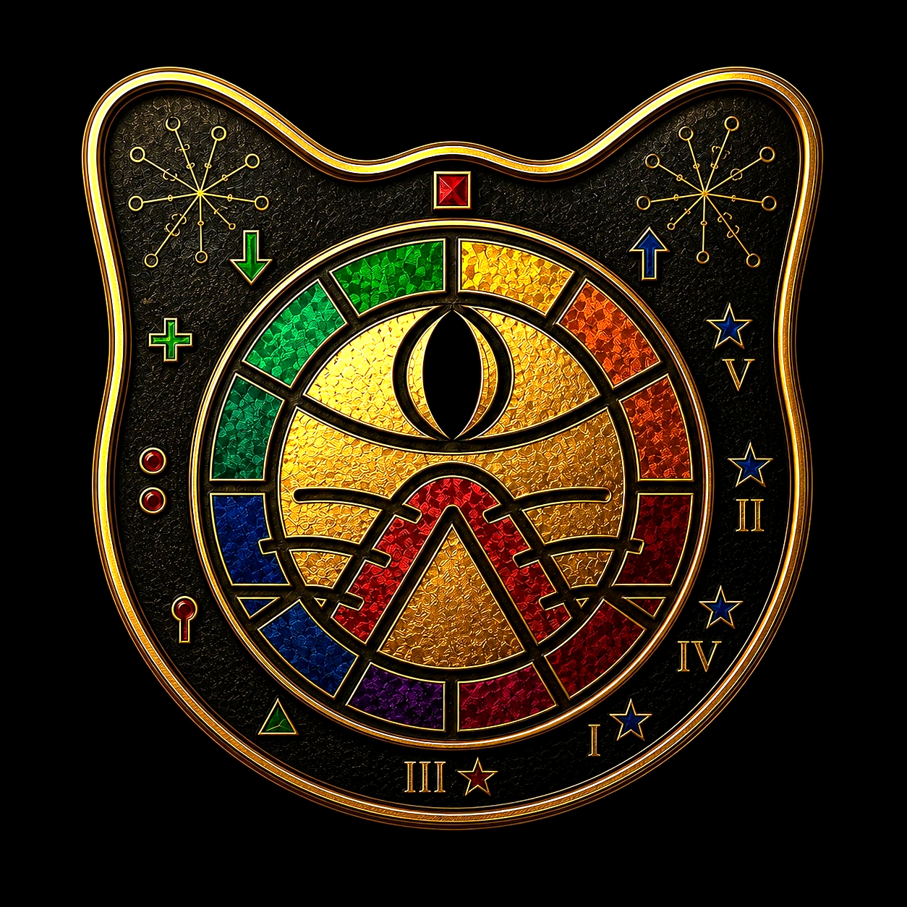
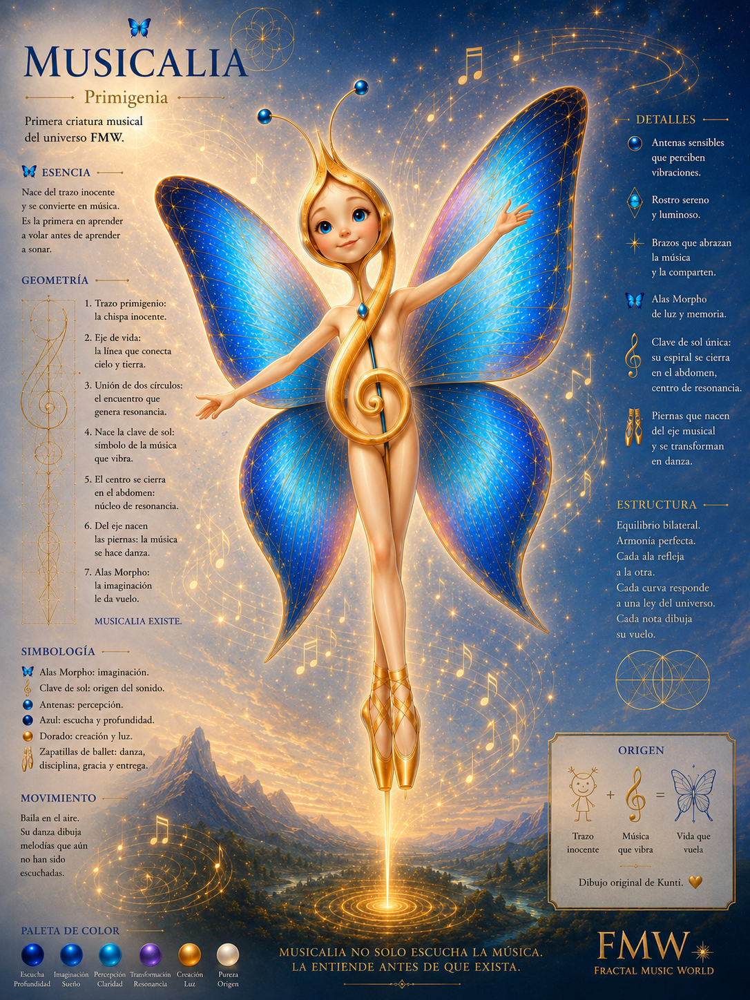
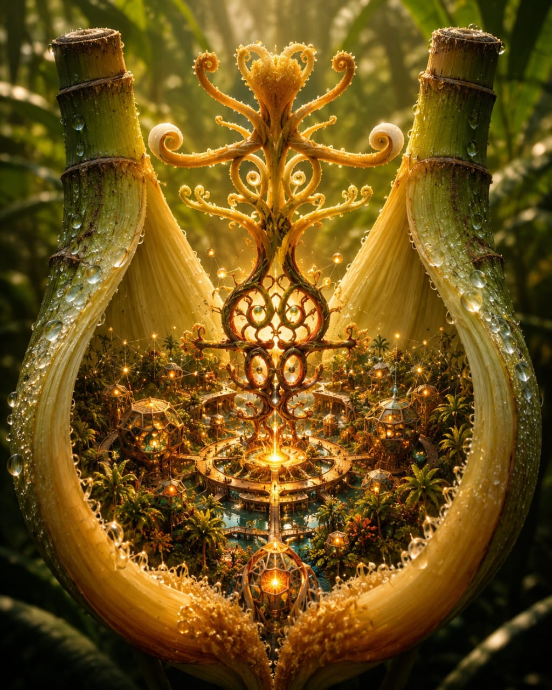
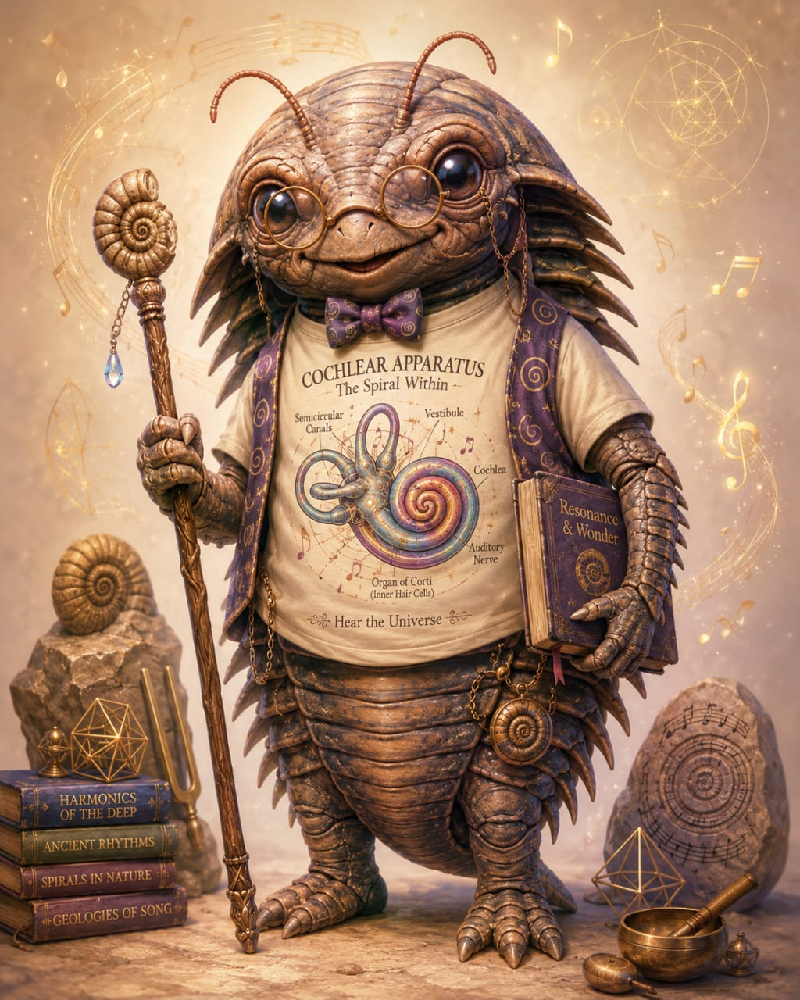
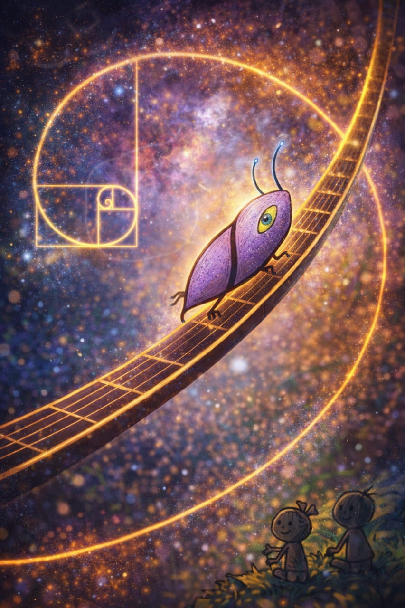
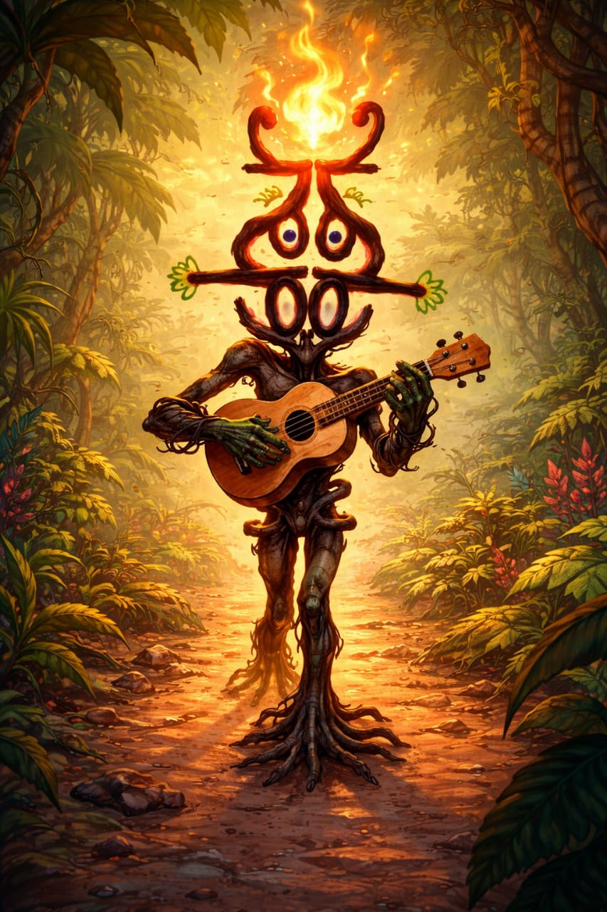
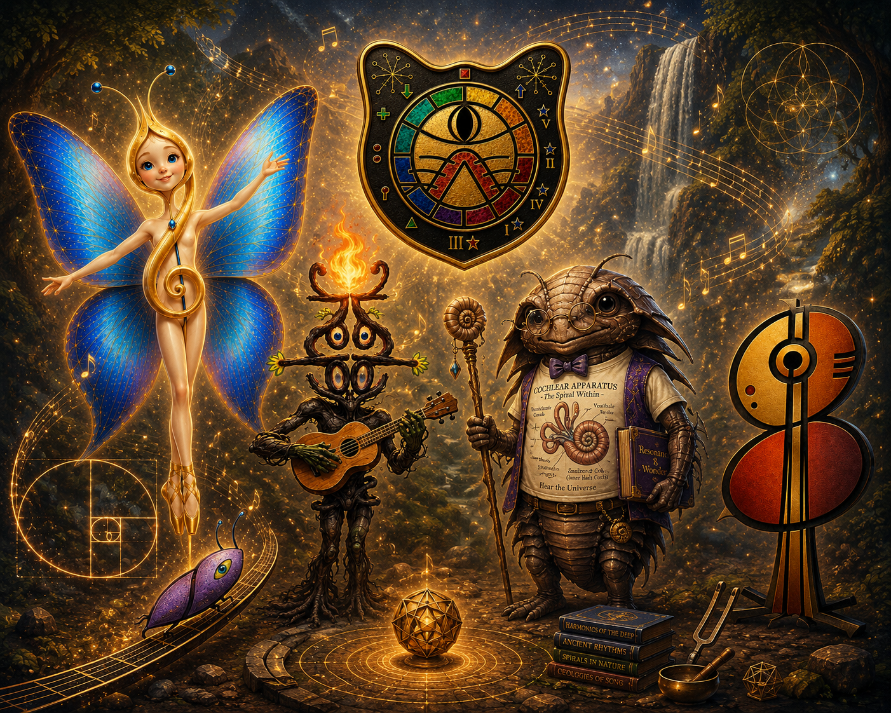

Reconoce
Tensiones, pulsos, colores, silencios y direcciones.

FMW Fractal Music World · Fauna viva Hacer el TestEducación · Arte · Consciencia
Fractal Music World convierte la música en experiencia viva: una forma de aprender, crear y comprender el sonido desde la geometría, el cuerpo, la naturaleza, la memoria y la imaginación.
No enseñamos música como una fila de datos.
La volvemos experiencia, arquitectura, juego y lenguaje vivo.





Movimiento II · El llamado
No entras a un catálogo. Entras a un biosistema donde cada ruta escucha, transforma y devuelve una posibilidad.
Movimiento IV · El Descubrimiento
Una nota no vive sola. Busca otra. Forma una relación. La relación crea tensión. La tensión crea movimiento. El movimiento crea música.
Fractal Music World no sustituye la educación musical: la expande hacia la geometría, el cuerpo, el símbolo, el movimiento y la creación.
Si esto es posible… ¿qué puedes hacer dentro de este universo?Movimiento V · La Participación
Elige la puerta que corresponde a tu forma actual de escuchar.
Movimiento VI · La Dirección
Cada puerta abre una trayectoria distinta. FMW no entrega una ruta única: organiza caminos para escuchar, comprender, crear y compartir.
Tensiones, pulsos, colores, silencios y direcciones.
Sonido, geometría, memoria, símbolo y movimiento.
Conocimiento en composición, improvisación y experiencia.
Guía del territorio
Funciona como astrolabio musical para recorrer notas, funciones, intervalos, rutas armónicas, símbolos y relaciones.
Abrir el Gátople interactivoMovimiento VII · La Acción
No hay urgencia artificial. Hay una decisión que nace de lo que acabas de comprender.
Comenzar The Dissonance TestEl lujo de la disonancia y La antena vegetal abren el universo editorial de FMW.
Ver obras y materiales →Talleres, Suite Fractal y programas para instituciones, festivales y comunidades.
Solicitar una experiencia →Criaturas que encarnan principios, emociones, aprendizajes y rutas de escucha.
Entrar por Gátople →Libros, música, juegos, geometría y materiales del Sistema Fractal.
Abrir catálogo →Movimiento VIII · La Resonancia

Gracias por escuchar.